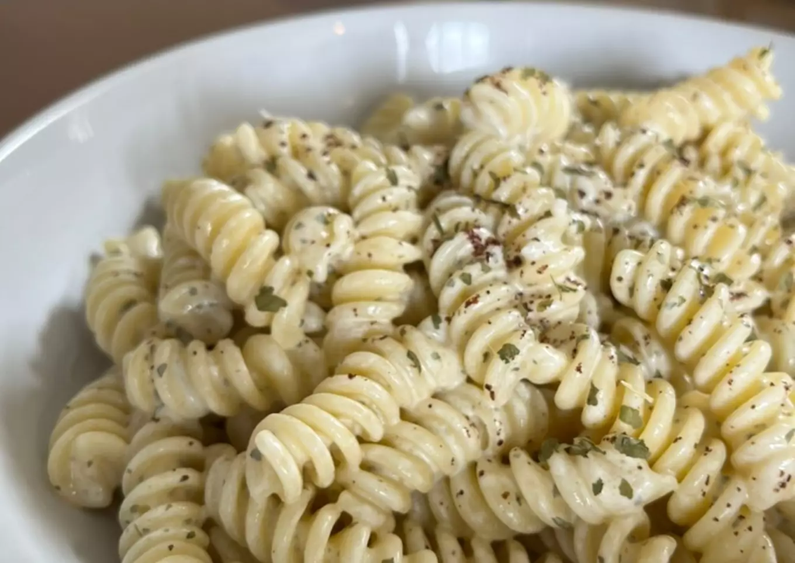

Yogurt-Garlic Pasta

This simple recipe results in a quick an delicious meal with just 3 ingredients.
Ingredients:
- 250g fusili pasta
- 500g natural yogurt, unsweetened
- 2 cloves of garlic
- salt
Preparation:
- Boil your pasta in salted water as stated in the instructions
- Drain the water
- Add the whole container of yogurt to your hot pasta and give it a good stir
- Use a garlic press or a knife to cut the garlic into small pieces and add them to the pasta
- Salt the pasta and stir again
- Serve the pasta while still hot